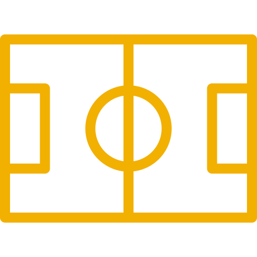

Web Developing
I build clean, responsive websites that look great on every device and deliver fast, user-friendly experiences. I enjoy solving design and functionality challenges with HTML, CSS, and JavaScript, and I focus on writing code that is both accessible and easy to maintain.
Whether creating landing pages, personal portfolios, or interactive features, I’m driven by the opportunity to turn ideas into polished, modern web projects that help clients stand out online.
Software Development
I design scalable software solutions with clean architecture, maintainable code, and practical problem solving at the core. I enjoy translating real-world requirements into reliable applications using modern tools, frameworks, and best practices.
From backend services to desktop and mobile workflows, I focus on collaboration, testing, and continuous improvement to deliver software that performs well and adapts as needs evolve.
AI & ML
I explore artificial intelligence and machine learning to build intelligent systems that learn from data and automate meaningful decisions. I enjoy working with models, data pipelines, and algorithmic thinking to turn insights into practical applications.
Whether it’s predictive analytics, natural language tasks, or smart automation, I focus on creating AI solutions that enhance user experiences and drive better outcomes.

Sports
I still play football, and I have been involved in the sport since class 6th. Over the years, football has shaped my discipline, teamwork, and determination.
The highest level I reached in football was nationals, and I play as a defender, where focus, positioning, and composure are essential to supporting the team and protecting the goal.